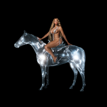

I could go on and on about how INSANELY difficult it is to pick my favorite song out of her huge discography in a span of 20 plus years. But I will always be grateful for Crazy In Love. It's literally the song that started it all! I was 7 (which is my favorite number) years old when this song was released and I feel that it changed my life ever since. It was such a world-stopping moment and it's hard to say if we'd ever have a classic artist debut like that ever again.
So many great albums were made but I have to give it to her sophomore album, B-Day. It's so special to me because pretty much all the songs on that album were classic charting hits. Irreplaceable, Beautiful Liar with Shakira, Upgrade U, GET ME BODIED?! DEJA VU?! At this point, might as well name the rest of the track last because all of these tracks were and still solid singles. Even my personal favorite, Freakum Dress. Fun fact, many think that Beyonce's self-titlted album was the first album the she recorded a visual film for but it was actually B-Day. I remember watching all of those music videos as a kid trying to learn the dances.
Beyonce's Homecoming concert for Coachella 2018 was one of the most LEGENDARY performances tp ever grace this planet. It represented a particular part of Black Culture in the best way possible. Specifically, the culture of Historical Black Colleges & Universities. The culture of Black marching bands and the African-rooted dance styles of Stepping and Marjorette Dancing. From the football bleachers set-up for the stage, to the costumes representing Bey's Greek organization BΔK, the marjorette dancers, the drum majors & The Bug-A-Boo steppers, the background singers, The Bzzz Drum Line. The concert/documentary is even available to stream so the BeyHive can relive that extraordinary moment forever. It made me proud to be a BeyHive and it's official that NO ONE can tell me anything about this woman's talent and performance ability. Her skills are unmatched in every way to the point that it's VERY hard to say that there will ever be another icon like Beyonce Giselle Knowles-Carter.
